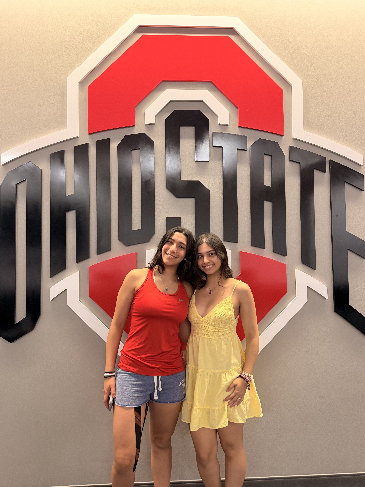

Faculty Friends
Faculty Friends is a former Staters program that did not succeed in its previous form. I propose bringing it back with a new system designed to create meaningful connections between faculty and students. Its purpose is to set aside dedicated time for them to get to know one another in a smaller, casual setting. At the beginning of each semester, students and faculty would have the option to sign up, and students who participate would be divided evenly among participating faculty members. Because participation lasts for one semester, students and faculty could sit out when their schedules are too busy and join again in a future semester! This flexibility would help ensure that those who sign up can fulfill the program’s requirements. Each student would be required to meet with their assigned faculty member at least once per semester, with two meetings as the goal. These meetings could include the faculty member and all their assigned students together, an individual conversation, or time spent setting up or breaking down a Staters event together! If a student is launching a project that semester, they would be encouraged to meet with their faculty member to ask for input on the event. Students are responsible for sending the first email to arrange a meeting. Making that first contact part of the program would help students build the habit of reaching out to faculty.
From Students, For Students
From Students, For Students would be a survey designed to learn what Ohio State students want to see from Staters. Many students have strong project ideas but may not know about Staters or want to join the organization themselves. Based on faculty advice, I would work with Mike Penner to send the survey to a random sample of 5,000 sophomores and juniors. The questions would stay within the scope of what Staters can do and ask for ideas we could act on. For example, we could ask, “During finals week, what would help your wellbeing?” and “What Ohio State fact or tradition would you like to bring awareness to?” We could review both common themes and specific responses during R&D meetings, using student input to guide future projects.
Staters on the Scene
Staters on the Scene would increase attendance at our larger events, like Light Up the Lake, by promoting them across campus on the day they take place. A few hours before an event, two or three Staters members would visit busy locations, such as the Oval, to hand out flyers and speak with students. We would also place three Staters themed A frame signs in visible locations. Each sign would feature the event flyer and our Instagram account, with the Staters logo on the back. This approach would reach students who are open to making spontaneous plans that day while creating excitement around campus. As students begin to recognize the signs, seeing the Staters logo could make them curious about what event is coming up next.
My Staters Journey

- January 2026: I attended my first Ohio Staters meeting, a Research and Development meeting.
- February 1, 2026: I completed my probationary interview.
- February 5, 2026: I was accepted into Ohio Staters, Inc.
- March 28, 2026: I attended New Member Night.
- April 6, 2026: I took meeting minutes for the first time at Research and Development.
- Fall 2026: I began cochairing the Little Free Libraries and Block O Statue projects.
- September 2026: I met with all faculty members to introduce myself and discuss my three suggestions.
- September 10, 2026: I had my Stater social.
- September 13, 2026: I attended Vivian Grimes’s probationary interview.